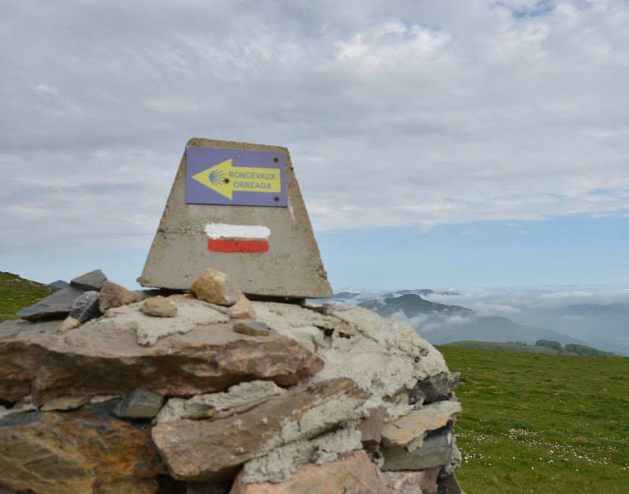
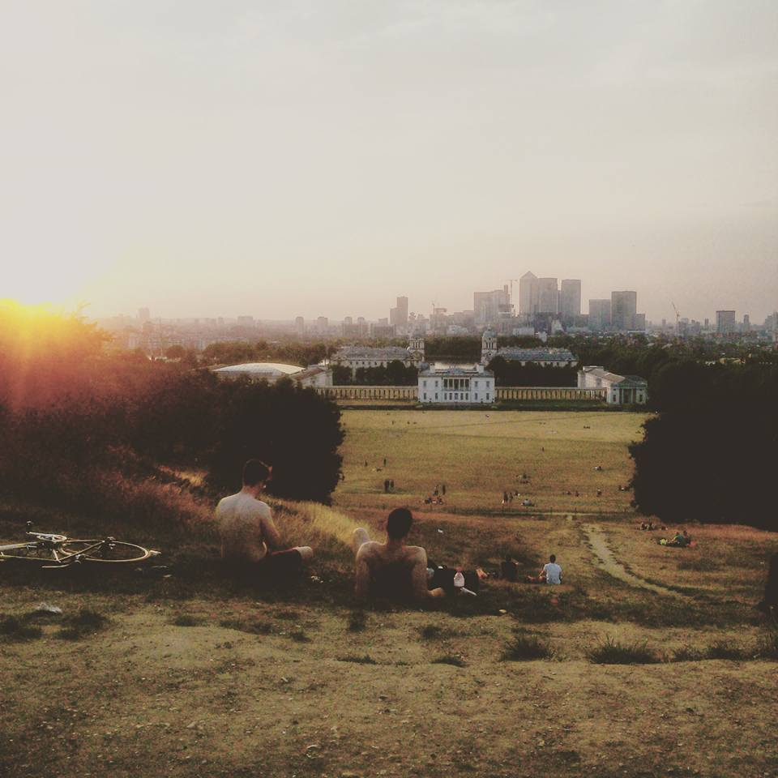

1. Italy
Hello there! I'm Marika Bertelli, born and raised in the charming city of Treviso, often referred to as "little Venice" and renowned as the land of Prosecco.
My passion for art, particularly Modern and Contemporary Art, led me to pursue studies in painting 🎨 at the Academy of Art in Venice and a Master's Degree in History of Art at the University of Padua.
For a few years, I managed my own Wordpress blog called Wander Through Culture, where I documented my visits to exhibitions and heritage sites.
2. Spain
A fun fact about me is that I did the Camino de Santiago, a famous pilgrimage route in Europe also known as the Way of Saint James. I chose the popular Camino Francés, which starts in Saint-Jean-Pied-de-Port, France, and goes for about 780 kilometers (485 miles) to Santiago de Compostela.
It was my first time doing it alone, and I made a mistake of carrying a backpack that was too heavy. Along the way, I ended up donating many of my belongings. This experience taught me the importance of letting go of things and focusing on what truly matters in the journey. It also taught me resilience and adaptability, skills that are valuable in everyday life.
×3. England
In 2015, I moved to the UK with limited English skills. Initially worked in hospitality, later transitioned to the museum sector. Currently, I'm a Visitor Service Supervisor at the Museum of Freemasonry, managing a team of five staff members and overseeing our tours.
I excel in research, storytelling and providing excellent customer service. Adept at working as part of a team to meet deadlines.
The pandemic posed challenges at my workplace, particularly digital engagement and accessibility. This situation sparked a strong interest in digital platforms for me. I saw how they bring people together, transcending physical limitations, and offer easy access to information and services from anywhere. I find it truly fascinating how digital platforms can connect us and bridge gaps.
×4. Japan

During my visit to Japan to see a close friend, I was amazed by Tokyo's efficient and clean public service, which was largely supported by technology. Our conversations about the city's lack of information on public art trails sparked an exciting idea: creating an app that would showcase Tokyo's hidden art gems and offer guided trails for art enthusiasts to explore.
This idea has ignited my motivation to learn coding, with the goal of one day turning this concept into a reality.
×5. Why do I want to apply to Founders & Coders?
After my trip to Japan, a friend suggested I try an online course in back-end development. It was tough but exciting, giving me a taste of coding. Wanting a career in web development, I work on the full-stack web development path through the Oding Project.
I attended a workshop called Beginners Coding for Community Organising at 4Space, where I met someone from Founders & Coders.
Founders & Coders stands out with its clear vision for industry transformation through community, inclusion, and collaborative learning. I love FAC emphasis on in-person collaboration, which sets them apart from remote-focused bootcamps. I enjoyed working with other applicants during F&C's meet-ups, now eager to join FAC Skills Bootcamp. I fully committed to completing a Software Apprenticeship with F&C help.
×